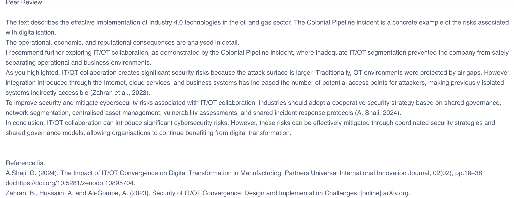
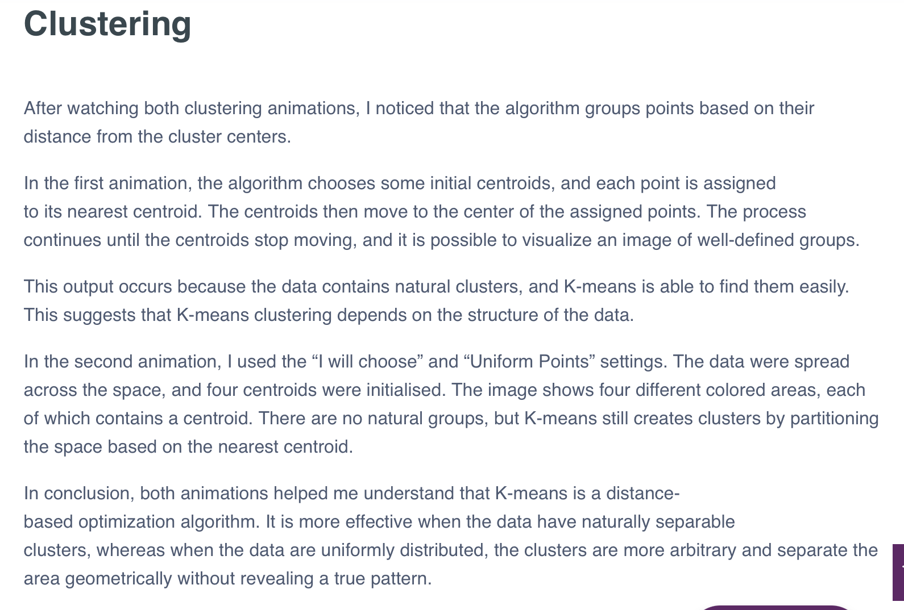
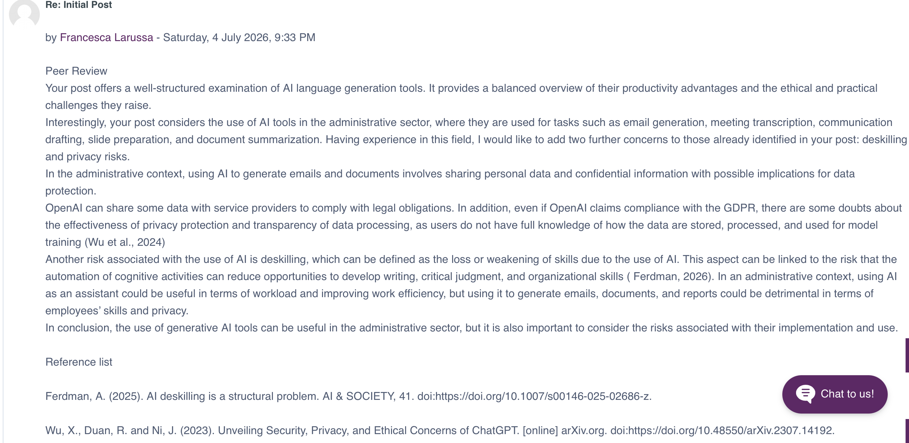
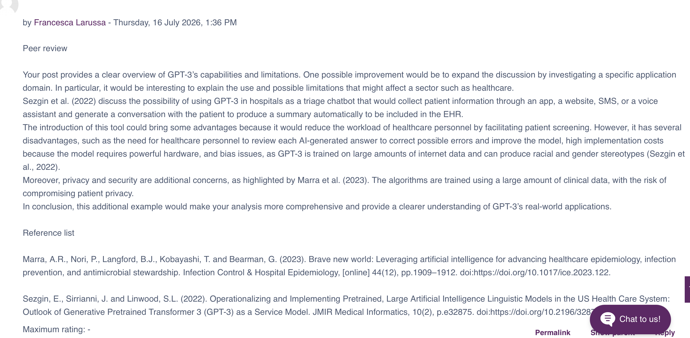
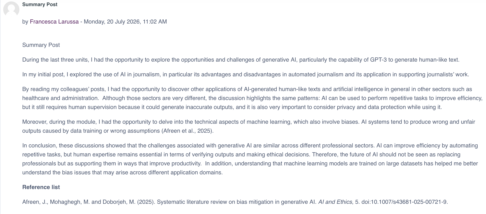

Professional Development
Unit 1
Collaborative Discussion - The 4th Industrial Revolution
During the first Unit I took part in a collaborative discussion on the impact of industry 4.0 and industry 5.0.
The screenshot below shows my initial post.
Through this activity, I had the opportunity to deepen my understanding of the use of machine learning in specific sectors and to comprehend the advantages and challenges.
Unit 2
Collaborative Discussion - The 4th Industrial Revolution
During the second Unit I took part in a collaborative discussion on the impact of industry 4.0 and industry 5.0.
The screenshot below shows my peer review posts.

EDA exercise
I completed the exercise from Seminar 2. The Jupyter Notebook is available for download below.
The EDA tutorial strengthened my data analysis skills, while the two peer reviews helped me develop a more critical perspective on others' work and collaborate effectively to mutually improve our outcomes
Unit 3
Collaborative Discussion - The 4th Industrial Revolution
During the second Unit I took part in a collaborative discussion on the impact of industry 4.0 and industry 5.0.
The screenshot below shows my summary post.
Correlation and Regression exercise
I completed the regression and correlation exercise.
A pdf of the exercise is available for download below.
The regression and correlation exercise improve my understanding of how dataset characteristics affect the applicability of different regression models.
Unit 4
Linear Regression exercise
This exercise improved my understanding of how to apply and evaluate a linear regression model.
Although the results were not entirely convincing.
Unit 5
Clustering
For this wiki post, I explored two interactive clustering visualisations to better understand how clustering algorithms group data points based on similarity
This activity strengthened my understanding of clustering algorithms and how different data distributions influence the formation of clusters through unsupervised learning.

Jaccard Distance/Dissimilarity Calculations
This exercise improved my understanding of similarity measures and their role in clustering, and their importance in clustering and the analysis of categorical data
Unit 6
K-Means Clustering Tutorial
In this exercise I improved my understanding of how K-Means clustering groups similar observations and highlighted the importance of data preprocessing and selecting an appropriate number of clusters.
Unit 7
Perceptron Activity
In this exercise, I learned that changing parameters such as the weights, learning rate, and number of epochs affect how a neural network learns.
Unit 8
Collaborative Discussion - Legal and Ethical Views on ANN Applications
In this Unit, I took part in a collaborative discussion on the ethical considerations and legal implications of using ANN.
The screenshot below shows my initial post.
This activity gave me the opportunity to explore the use of machine learning across various sectors, with a focus on its benefits and challenges associated with its implementation.

Gradient Cost Function Activity
In this activity, I developed a better understanding of how learning rate and iterations influence the stability, speed of convergence and performance during artificial neural network training. It is possible to visualise the exercise below
Unit 9
Collaborative Discussion - Legal and Ethical Views on ANN Applications
During this Unit I took part in a collaborative discussion on the ethical considerations and legal implications of using ANN.
The screenshot below shows my peer review posts.
The two peer reviews helped me develop a more critical perspective on others' work and collaborate effectively to mutually improve our outcomes


CNN Model Activity
Through this activity, I deliberately analysed the article without consulting additional references to develop my critical thinking and analytical skills through an independent evaluation.
In addition, by testing the CNN model, I gained a better understanding of the challenges of image classification.
Unit 10
Collaborative Discussion - Legal and Ethical Views on ANN Applications
During this Unit I took part in a collaborative discussion on the ethical considerations and legal implications of using ANN.
The screenshot below shows my summary post.

Unit 11
Model's Perfomance Measurements Activity
In this exercise, I learned that selecting appropriate model parameters has a significant impact on model's performance.
Unit 12
Seminar 12 Activity
In this activity, I conducted four short piece of research on topics related to machine learning and artificial intelligence.
This allowed me to deepen my understanding of important theoretical aspects associated with the implementation and use of these technologies.